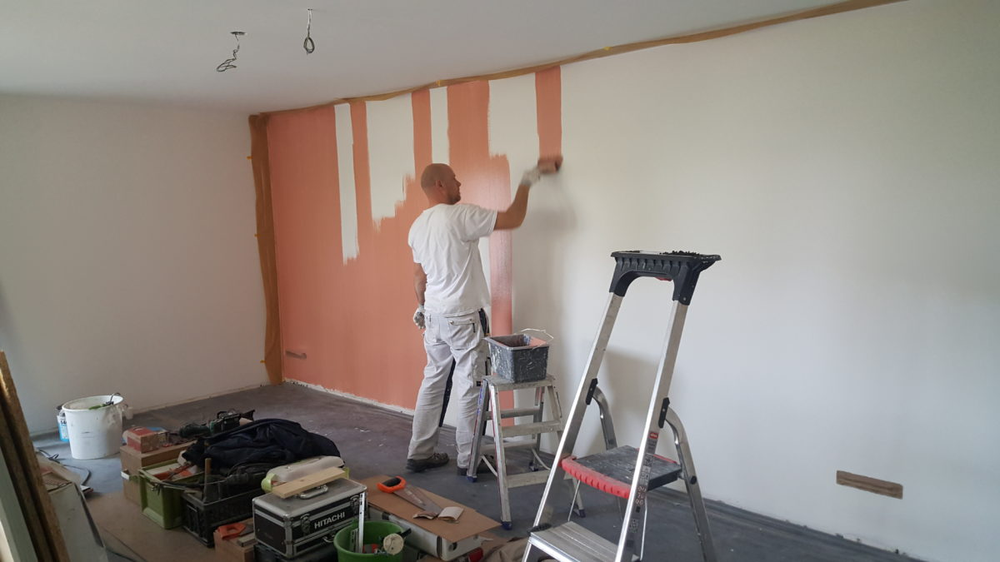
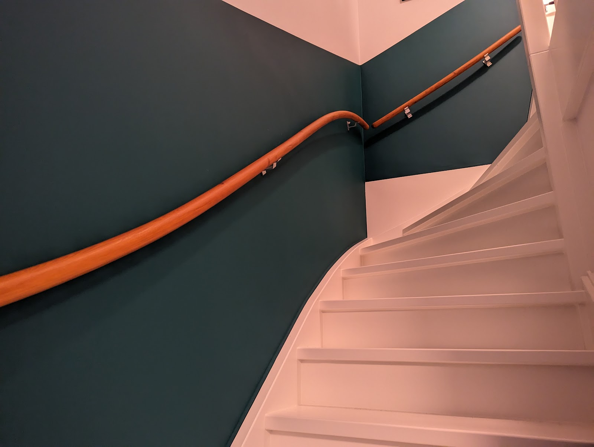
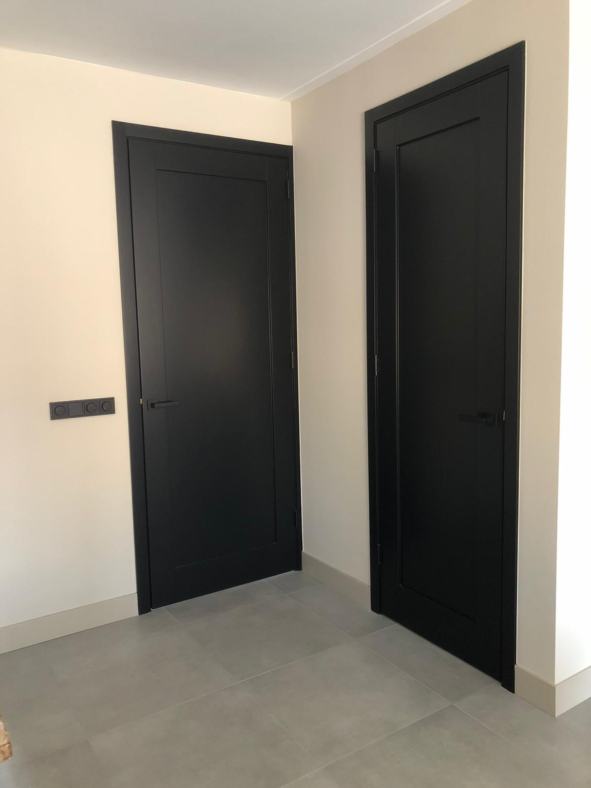
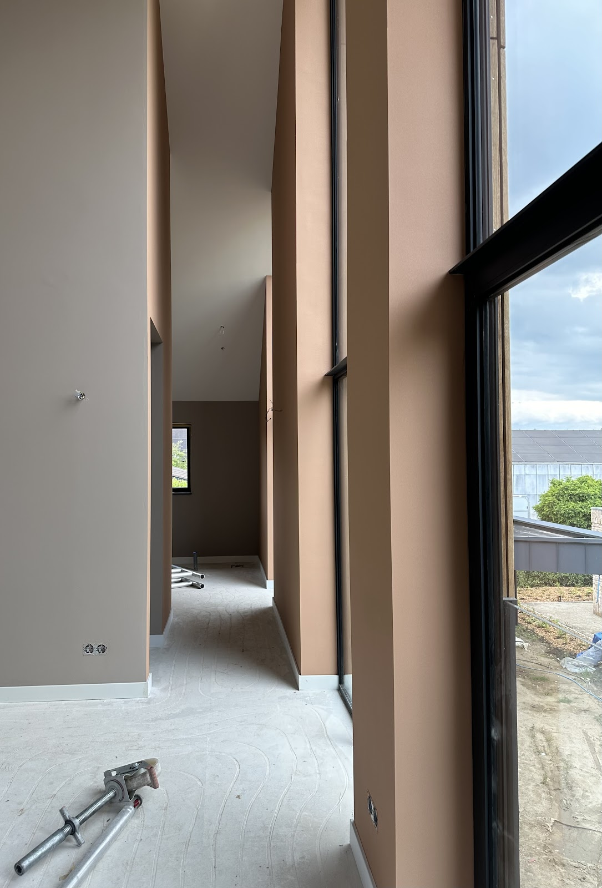
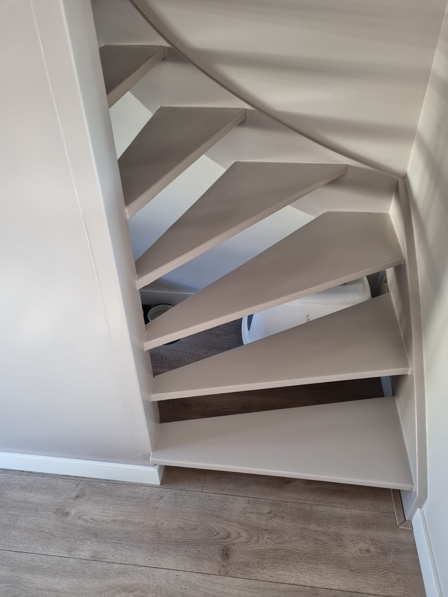
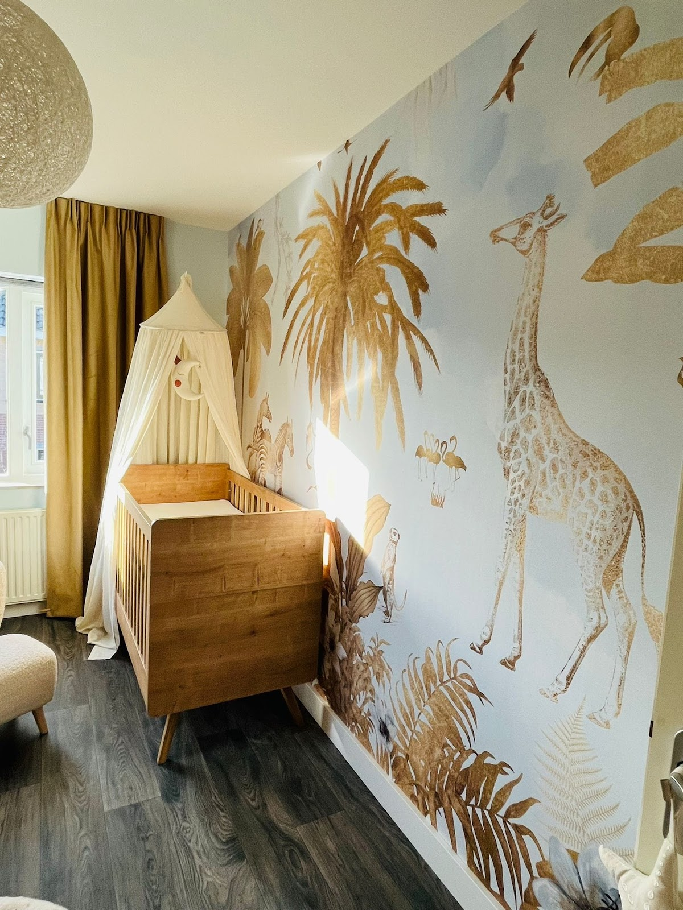

Schilder in Nijmegen en omgeving
Sterk in schilderwerk. Binnen en buiten.
Kozijnen, buitenwerk, trappen, deuren en wanden. Dejan Matos komt bij u langs, kijkt hoe het houtwerk ervoor staat, denkt mee over kleur en maakt een offerte op maat.
4,9uit 69 Google-reviews

Uit de waaier, op de muur
Een greep uit opgeleverd werk. Van een diepgroene trapwand tot matzwarte binnendeuren: de kleur moet kloppen en de afwerking strak zijn.





Is uw buitenwerk aan de beurt?
Buitenschilderwerk is ongeveer elke 5 jaar opnieuw nodig. Niet alleen omdat uw huis er dan weer verzorgd uitziet, maar vooral om kozijnen, deuren, ramen en ander houtwerk te beschermen.
Twijfelt u? Dejan komt langs, bekijkt hoe het houtwerk ervoor staat, luistert naar uw wensen en maakt een passende offerte. Ook als u gewoon een andere kleur wilt.
Laat Dejan komen kijkenTijd voor een opfrisbeurt als u dit ziet:
- Scheurtjes of blaasjesVocht kan dan achter de verf komen.
- De verf poedertWrijf over het kozijn: blijft er kleur aan uw vinger, dan beschermt de laag niet meer.
- HoutrotZacht of verkleurd hout bij hoeken en naden.
- Zichtbaar verkleurdVooral op de zonkant verbleekt de kleur als eerste.
Wat klanten over Dejan zeggen
4,9 uit 69 reviews op Google
“Dejan Matos heeft bij mij het buitenwerk en de zolder geschilderd. Het is een erg vriendelijke man die degelijk vakwerk levert! Hij werkt keurig en is een pietje precies. En een harde werker. Hij denkt ook goed met je mee en geeft advies. Een aanrader voor als je een schilder zoekt.”
“Bij ons heeft Dejan de buitenkozijnen geschilderd en dat was oprecht een hele fijne ervaring. Dejan is een echte vakman in hart en nieren. Denkt mee en communiceert prettig. Het resultaat is prachtig.”
“Geweldig werk geleverd. Wij hadden met grote hoogtes te maken, maar daar werd goed over nagedacht. Hoge mate van kennis en professionaliteit, denkt mee, is constant aan het plannen voor de beste aanpak. Echt heel fijn. Schilderwerk is erg strak geworden en ook goed kleuradvies ontvangen in het proces.”
Vrijblijvende offerte
Beschrijf kort wat er geschilderd moet worden. Liever eerst even praten? Bel gerust, dat is vaak het snelst.
- Telefoon
- 06 52462451
- info@schildermatos.nl
- Adres
- Slingerkogelstraat 41
6515 GE Nijmegen - Bereikbaar
- Maandag t/m zaterdag 07:30 tot 18:00
Zondag gesloten